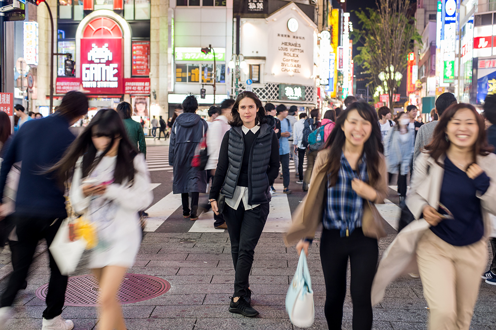

Features - The Boweress
Jump On Board
23 August, 2017
Tokyo could be my favourite city (prefecture) in the world! From the minute you land there is a sense of order, structure and respect. The place is spotless with an air of ‘these people have got this down!’ Now maybe this is because I’m biased in having studied the language but I get an immediate feeling of joy and excitement. In Tokyo you definitely feel like an outsider, an outsider in my case who desperately wanted in.
Tokyo functions in a way like no other city. It is one of the highest condensed areas in the world yet they all seem to work together in a way that politely gets it done. For starters peak hour in any city can be daunting and Tokyo is no different, hell there are people designated to cram you onto the trains yet no one gets mad. There is a fastidious line system whilst waiting to board and everyone keeps to the left when entering or exiting. There is a sense of calm in chaos throughout the subways with birds chirping over the PA to keep the peace. And with a subway system that apologises when 2 minutes late you’re bound to get where you’re going in a flash. There are even dedicated female only carriages even though it is one of the safest cities in the world. Once again, on it!
Once you have navigated the subways which there are numerous lines, getting around Japan is reasonable simple. Not everyone speaks English…at all, especially the taxi drivers so be prepared with the Japanese name of where you want to go and maybe an image. The taxis are expensive in comparison to subway yet the automatic opening and closing doors alongside the décor is something worth seeing. They’re like the cabs of the future with a classic old school feel inside.
As always, walking is another great way to see a city yet streets can get confusing at times. There are supposed shopping districts in Tokyo yet you soon realise that shopping is everywhere. Yes, Ginza, Harajuku and Shibuya are famous yet it’s still all around. The experience is next level too as their attention to detail and customer service is off the charts. I can honestly say I became pretty addicted. Household name Comme Des Garcons and I crossed paths way too many times.
Tokyo thrives come nightfall; the flashing neon lights and buzz engulf you. There is nowhere I have felt so safe at night either. To counteract the food gazing and intense shopping jumping into the abundance of parks is a necessity. Like Central Park in NYC you can feel a world apart from the hustle and bustle viewing the meticulously planned landscape of their inner city havens.
This place is cool as f@3$! So if you’re on the hunt for cool, there’s a load to be consumed. From Aoyama, Shibuya, Meguro to Harajuku, specific wards serve a specific purpose. High end fashion to quirkier haunts, once again the consumer experience is next level.
PS. I’m officially Y3 obsessed!
